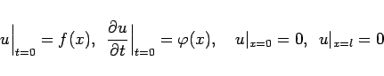
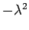
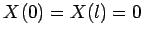
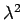
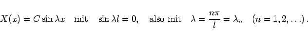
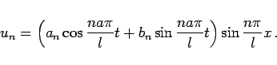
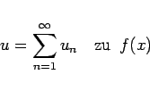
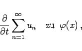
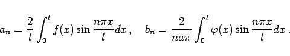

Inhalt Index DeskTop Bronstein

 Differentialgleichungen Partielle Differentialgleichungen Lineare partielle Differentialgleichungen 2. Ordnung Integrationsmethoden für lineare partielle Differentialgleichungen 2. Ordnung
Differentialgleichungen Partielle Differentialgleichungen Lineare partielle Differentialgleichungen 2. Ordnung Integrationsmethoden für lineare partielle Differentialgleichungen 2. Ordnung


Saitenschwingungsgleichung wird die lineare partielle Differentialgleichung 2. Ordnung vom hyperbolischen Typ
genannt, mit deren Hilfe die Schwingungen einer gespannten Saite beschrieben werden. Die Aufgabe besteht darin, diese Gleichung unter den Anfangs- und Randbedingungen
|  | (9.90b) |
zu lösen. Zur Lösung wird die Methode der Variablentrennung verwendet.
Mit einem Separationsansatz der Form
| u =X(x)T(t) | (9.90c) |
Die Variablen sind getrennt, denn da die linke Seite nicht von x und die rechte nicht von t abhängt, ist jede Seite für sich eine konstante Größe. Die Konstante wird negativ gewählt und gleich  gesetzt, da sich mit nichtnegativen Werten nur die triviale Lösung u(x,t) =0 ergibt. Man erhält die zwei linearen Differentialgleichungen
Aus den Randbedingungen folgt .
Man sieht, daß X(x) eine Eigenfunktion des STURM-LIOUVILLEschen Randwertproblems ist und  der zugehörige Eigenwert. Integration der Differentialgleichung (9.90e) für X und Berücksichtigung der Randbedingungen ergibt
|  | (9.90g) |
Integration der Gleichung (9.90f) liefert für jeden Eigenwert  jeweils eine partikuläre Lösung der ursprünglichen Differentialgleichung (9.90a):
jeweils eine partikuläre Lösung der ursprünglichen Differentialgleichung (9.90a):
|  | (9.90h) |
Durch die Forderungen, daß für t =0
|  | (9.90i) |
wird und
|  | (9.90j) |
ergibt sich mit Hilfe einer FOURIER-Reihenentwicklung nach Sinusfunktionen
|  | (9.90k) |